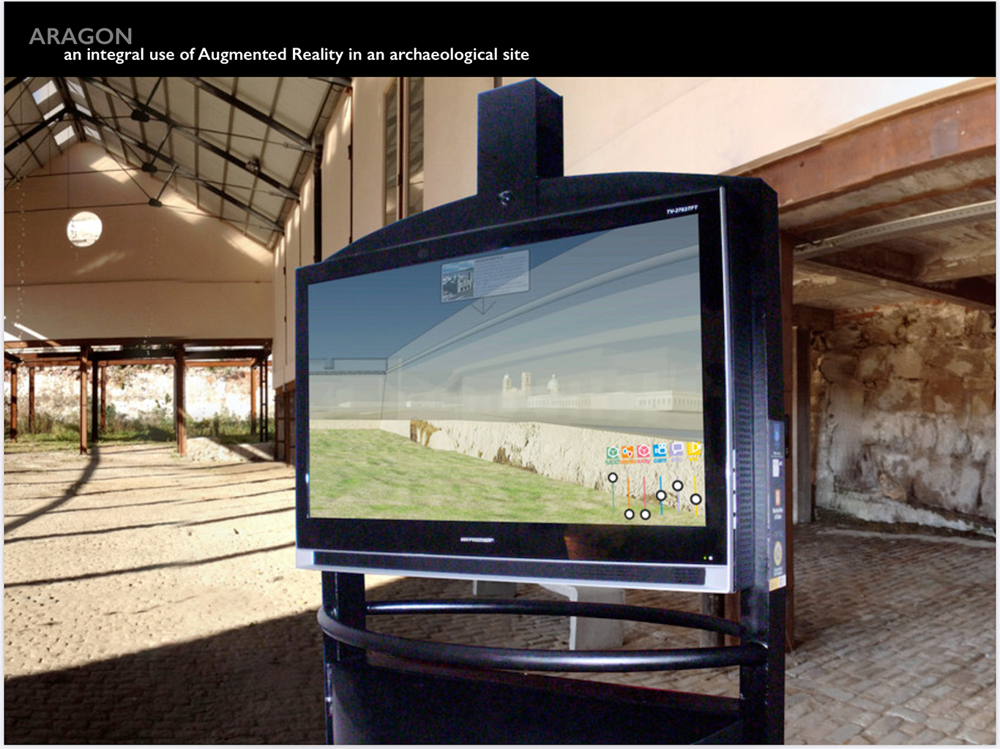
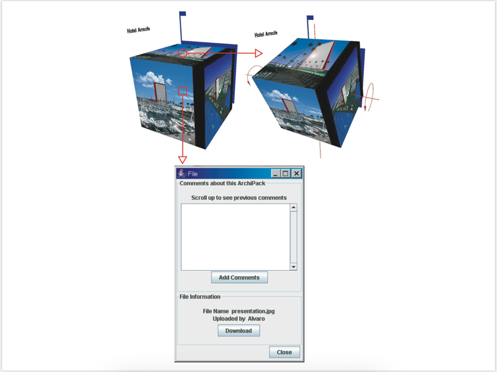

Research
2019 Information Technologies Consulting: ICT in FADU, Uruguay

Montevideo, Uruguay,
Facultad de Arquitectura, Diseño y Urbanismo (FADU), Universidad de la República
This consultancy was developed in three stages: (A) Data gathering (on site and remote, including general polls for students, professors and practicing architects, and interviews to international actors), (B) Data analysis and evaluation and formulation of strategies, and (C) Presentation of progress reports and a final public presentation
The 75-page long final report could be summarized in six strategies:
1) Online teaching/learning environments as the main tool to democratize access to higher education.-
2) Immediate response to class overpopulation by implementing course construction teams for fast deployment on the web.-
3) Go Paperless! by transitioning from paper to digital as soon soon as possible.-
4) Fostering Digital Fabrication is a necessary balancing strategy that works in tandem with Go Paperless!
5) Software workshops inside the design studios: the studio environment is the natural area for students and professors for introducing (and learning) emergent design technologies.-
6) Enhance communication and visibility among multiple actors across FADU (School of Architecture, Design and Urbanism) by taking advantage of its current structure, horizontal and non-hierarchic.-
2016 Design Theories and Conceptual Models: Collaborative Assemblages
Collaborative Assemblages is a theoretical framework first drafted on my second tenure as Researcher at the Institute of Industrial Science, University of Tokyo, and I have been applying to my teaching/learning activities ever since.
The cultural changes generated by the integration of technology into the way people experience spaces and the city always attracted my attention. This critical theory approach to urban and environmental design is constantly evolving and it was originally named "Collaborative City." Drawing on sociological, historical and computer science methodologies, this approach conceptualizes space as a networked ensemble of human and mechanical nodes in order to identify possibilities for the improvement of urban life. The main bibliographical sources on theory include works of Deleuze and Guattari, Manuel DeLanda, Manuel Castells, and Robert M.Pirsig. In architecture, writings by Lebbeus Woods had been enormously influential.
Contemporary, people experience these collaborative assemblages through both physical and virtual interactions, as a result of the integration of digital bits of mobile information into daily physical reality (for example RFID chips). Architects and urban designers are incorporating this phenomenon into their projects by working with both the shape of the physical space and the content of its digital twin, which William Mitchell describes as the totality of electronically-stored information related to a given place, from the web page of a local shop to the stream of images of a security camera.
People are re-orienting their relationships to central squares, shopping streets and civic centers through interactions with this digital twin, which is increasingly accessible through software that delivers it to portable devices or responsive installations.
For example Urban Augmented Reality applications bring to smart-phone users the location of the nearest metro station in London or Paris, or the best opportunity for investment on real estate in Amsterdam. Similarly, responsive installations allow passersby to interact in real time with a Christmas illumination along the Bahnhofstrasse in Zürich, or with a park illumination in Uster, Switzerland. Gradually, architects and urban designers are incorporating digital systems as resources for experimentation.
Certainly, this conceptualization promotes interventions on the city center --where it reaches critical mass--, and is in fact driven by a very practical question that urban theoreticians and city administrators have posed since the 1960’s: How can we introduce more density into the central areas of the city, attracting new residents and offering better living conditions than the suburbs? The energy balance of the world will be greatly improved simply by diminishing unnecessary commuting to the city, and I believe that well-designed Collaborative Assemblages will offer innovative solutions in that direction.
2013 Morphogenesis and Parametric Design: Design Constraint Systems

Peer-reviewed paper and design proposal
From the abstract:
"Generative Architectural Design permits the automatic (or semiautomatic) generation of architectural objects for a wide range of applications, from archaeological research and reconstruction to digital sketching. In this paper the authors introduce design constraint systems (DCS), their approach to the generation of architectural design with the help of a simple example: The development of the necessary formalisms to generate a family of architectural designs, i.e. simple houses and pagodas. After explaining the formal system the authors introduce an approach for the generation of complex form based on the application of transformations and distortions."
Bollmann, D., & Bonfiglio, A. (2013). Design Constraint Systems - A Generative Approach to Architecture. International Journal of Architectural Computing, 11(1), 37–63. https://doi.org/10.1260/1478-0771.11.1.37
- 
2010 Interfaces and Augmented Reality: ARAGON
Interface design and working paper
From the abstract:
"ARAGON (Aplicación de Realidad Aumentada de primera Generación, First
Generation Augmented Reality Application) is a prototype Augmented Reality
(AR) system designed for interacting in real time with a virtual reconstruction of a
cultural heritage site. Specifically, the system presents an AR scene of the
defensive wall one of the four walled cities that existed in South America, the city
of San Felipe y Santiago de Montevideo, Uruguay. Aiming at a virtual time travel
through a historical moment of the place, this scene incorporates graphic and
textual information of the city as it was by the year 1807, including topography,
defensive systems, main buildings, access routes, human characters, means of
transportation and other details of that time."
Alvaro Bonfiglio,
Marcelo Payssé,
Francisco Serón Arbeloa,
Pedro M. Latorre Andrés,
Tomás Laurenzo,
Juan Pablo Portillo,
Fernando García Amen, ARAGON, an integral use of Augmented Reality in an archaeological site: the defensive wall of San Felipe y Santiago de Montevideo
- 
2010 Collaborative and Collective Design: Multidcd+Visual
Peer-reviewed paper and design proposal
From the abstract:
"Globalization of architectural practices and fragmentation of knowledge are driving contemporary design studios to work within a dislocated net of partners. Consequently, the main point for successful remote collaboration is the understanding of team dynamics. During the first stages of a design activity, team members work, discuss and communicate multiple proposals in a dynamic and unclear way. Available software for teamwork assistance is focused on real time sessions, following the approach used for Product Development. However, remote collaboration in architectural design requires a specific approach supported by asynchronous collaborative visualization tools. This paper presents the Multi-dimensional Collaborative Debate Visualizer (MultiDCD+Visual), a client-server system for managing the flow of information in geographically distributed design teams. The system constructs a multi-dimensional model of the evolution of the design activity, allowing users to intuitively understand the debate of ideas."
Alvaro Bonfiglio & Akira Fujii (2010) MultiDCD+Visual, an Asynchronous Visualization System for Managing the Debate of Ideas in Remote Collaboration, Journal of Asian Architecture and Building Engineering, 9:1, 155-162, DOI: 10.3130/jaabe.9.155
2008 Design Theories and Conceptual Models: Tokyo Cityscapes
Special Lecture Series, Japan
The Hidden Order, an Electric Geisha, a sea of signs, the empty center, manga city, seven landscapes, railway urbanism... Is complexity inherent to the object of study, or to the selected analysis? In order to answer this question we build our understanding of Tokyo from a basic geographical /topological approach. And only then we proceed to incorporate the variables required for developing a comprehensive idea of the architecture of the city.
The results of these studies were presented every year to different generations of architecture students visiting Japan, from 2002 until 2008.
2006 Doctoral Dissertation: Remote Collaboration of Designers
Remote Collaboration of Designers, Adaptable Networks for Unpredictable Environments
Ph.D. Dissertation, Fujii-Magaribuchi Laboratory, Institute of Industrial Science, University of Tokyo, Japan, 2006
1997 Travel Sketchbooks: Worlds

Round-the-world
In times when the common tourist is capable of recording tons of data during a trip using a fist-sized camera or even just a phone, it is unusual to discover a draftsperson painstakingly reproducing a very small portion of the scenery, with the rudimentary help of a pencil and a sheet of paper. Occasionally, some curious passersby gathered around me while I was drawing. I could not deny that in those moments a doubt was growing inside me: Were they watching me as an artist or as a mirage from the past?
Nevertheless, in spite of my occasional public, sketching was always a personal experience. Drawing the most interesting buildings of the world produced the feeling of learning about architecture in a way not comparable with photography or the acquisition of some special souvenir. While sketching, searching for composition lines and discovering basic proportions generated an intimate and unique knowledge of the building.
In 1997, I traveled around the world as part of the extracurricular activities promoted by the Universidad de la República – Uruguay. This trip was fully sponsored by Arquitectura Rifa, a cooperative organization of students.
The sketches were published in TRAZO MAGAZINE Special Issue “60 Years Of The Lottery Of Architecture”, 2004, Montevideo, Uruguay, and also presented in a collective exposition at the Ministry of Transport and Public Works in 2011 in Montevideo, Uruguay.